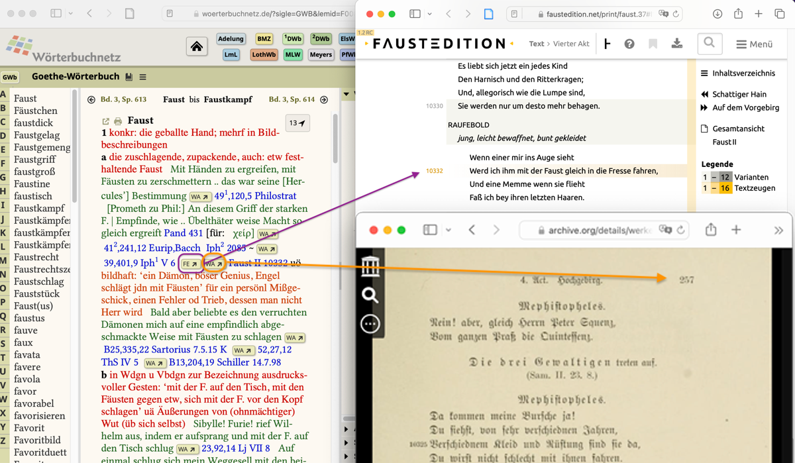
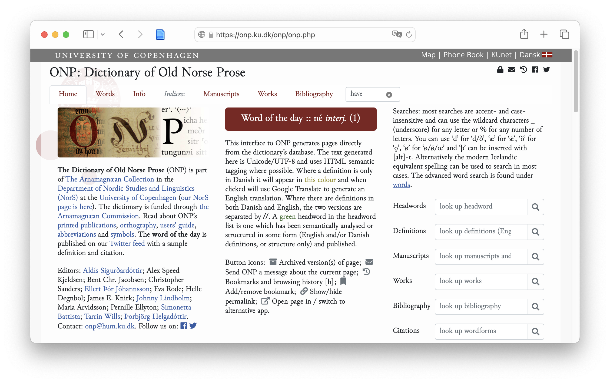
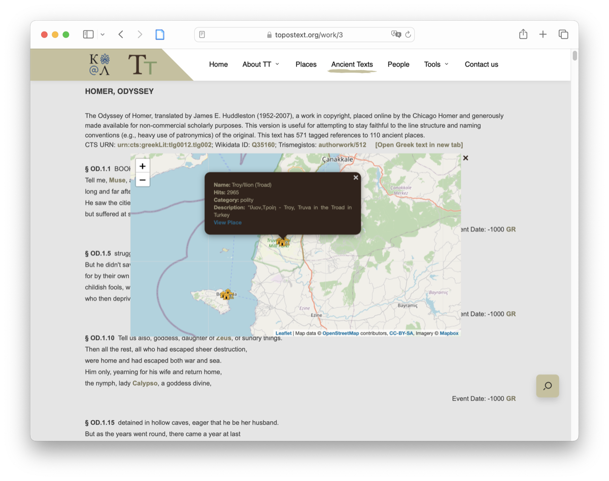

Panorama de la investigación en Humanidades basada en datos
José Luis Losada Palenzuela (RISE, Universität Basel)
«Entre lo social y lo digital. Encuentro de jóvenes investigadores del Hispanismo Suizo», Basel, 11.10.2024
## Índice
## Introducción
<h3 style="font-size: 25px;">“<a href="https://www.woerterbuchnetz.de/GWB?lemid=F00806"><i>Faust</i></a>”, <i>Goethe-Wörterbuch</i>, digitalisierte Fassung im Wörterbuchnetz des Trier Center for Digital Humanities, Version 01/23.</h3> 
### Dictionary of Old Norse Prose ([ONP](https://onp.ku.dk/onp/onp.php)) ← ONP [Reader](https://onp.ku.dk/onp/onp.php?q32) 
## Scenario 2 ### Digital editions and gazetteers: _ToposText_ - Ancient texts and mapped places. - Beyond the scholarly community: <div class="cita" style="font-size: 0.8em">“[texts] have been stripped of footnotes and other scholarly apparatus, [...] ToposText is not a substitute for the most recent scholarly edition of a given work”. <span class="fuente"><a href="https://topostext.org">ToposText</a>, version 3.0, Aikaterini Laskaridis Foundation</span></div> - Data from: [Perseus Digital Library](http://www.perseus.tufts.edu/hopper/) and [Pleiades](https://pleiades.stoa.org/home).
### [ToposText](https://topostext.org), version 3.0, Aikaterini Laskaridis Foundation 
## Conclusiones
<div>José Luis Losada Palenzuela, "title". </div><a style = "border-bottom: none" href="https://doi.org/10.5281/zenodo.8140728"><img class="DOI" alt="Deposited at Zenodo" src="https://zenodo.org/badge/DOI/10.5281/zenodo.8140728.svg"></a> <a style = "border-bottom: none" href="http://creativecommons.org/licenses/by-sa/4.0/"><img class="licencia" alt="License Creative Commons" src="https://i.creativecommons.org/l/by-sa/4.0/80x15.png"></a>